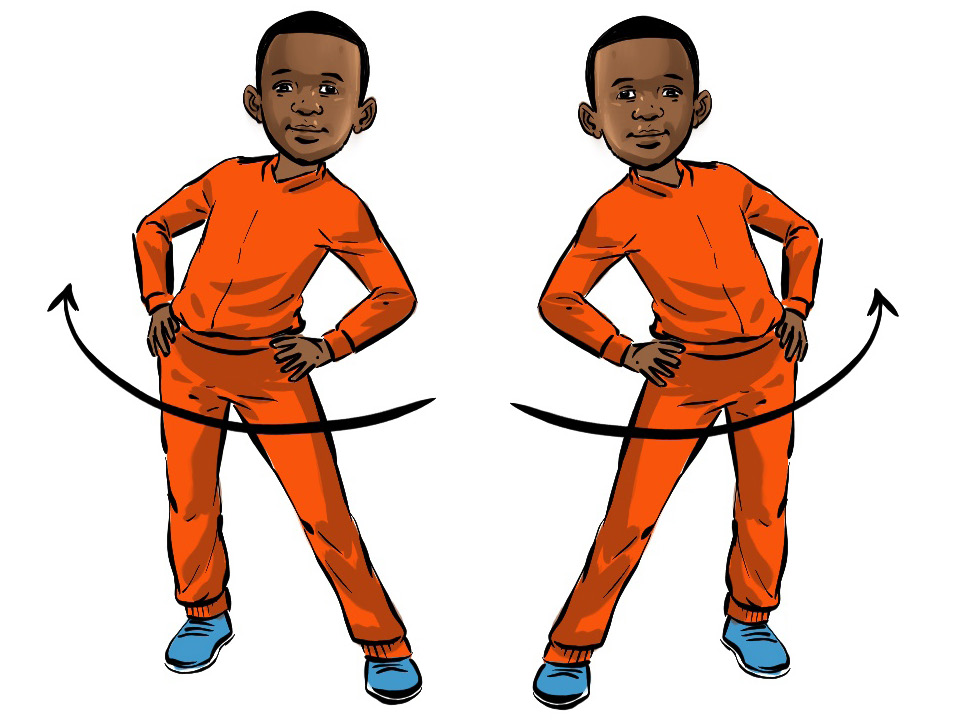
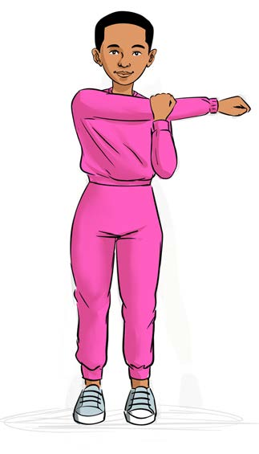

Figure 5: A pupil stretching the waist
6. Stretching the shoulders:
(a)
Stand with one arm stretched forward;
(b)
Use the other hand to pull the stretched arm slowly towards the chest, as shown in Figure 7;
(c)
Hold it for 10 to 15 seconds; and
(d)
Change the arm and repeat the same steps.

Figure 7: A pupil stretching shoulders